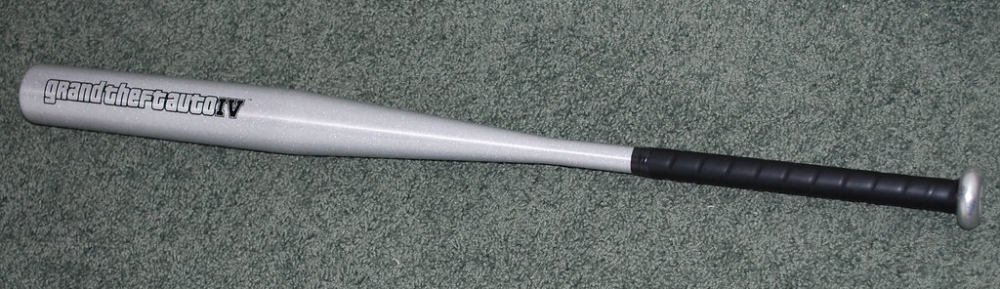
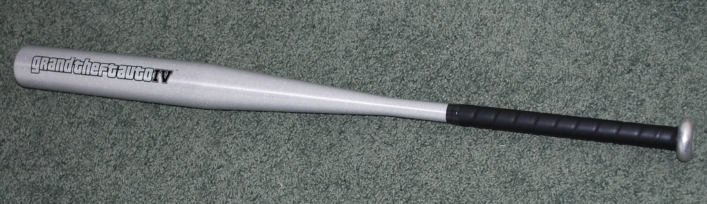

Baseball Bat 1

Baseball Bat 2
Baseball Bat 3
Baseball Bat 4

Explore our wide range of baseball bats!
Home | Products | News | BAse ball bat | Login | Logout| About| meme
Baseball Bat 1
|
Baseball Bat 2 |
Baseball Bat 3 |
Baseball Bat 4
|
A baseball bat is a smooth wooden or metal club used in the sport of baseball to hit the ball after it is thrown by the pitcher. By regulation it may be no more than 2.61 inches (6.6 cm) in diameter at the thickest part and no more than 42 inches (1.067 m) in length.[1] Although historically bats approaching 3 pounds (1.4 kg) were swung,[2] today bats of 33 ounces (0.94 kg) are common, topping out at 34 to 36 ounces (0.96 to 1.02 kg).[2]